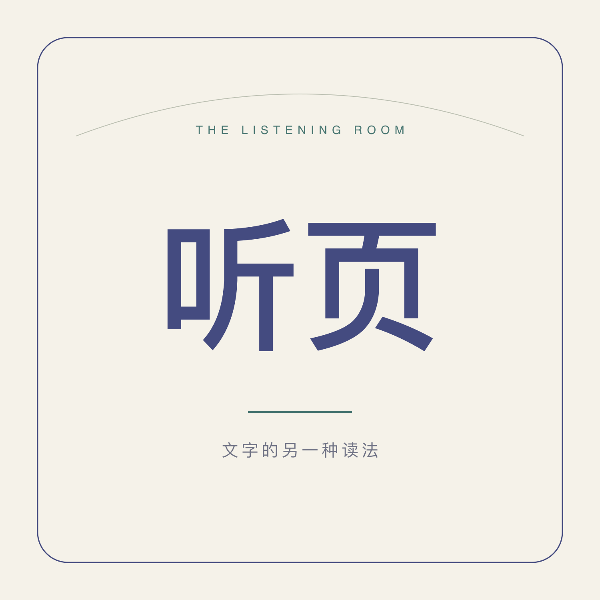

<!doctype html>
<html lang="zh-CN"><meta charset="utf-8"><meta name="viewport" content="width=device-width,initial-scale=1"><meta name="robots" content="noindex,nofollow"><title>听页 · 我的听书</title>
<style>body{margin:0;background:#f5f2e9;color:#353c64;font:18px/1.8 -apple-system,BlinkMacSystemFont,sans-serif}main{max-width:620px;margin:8vh auto;padding:30px}img{width:96px;border-radius:22px}h1{font-size:38px}p{color:#6e7081}a{color:#444b80}input,button{font:inherit;box-sizing:border-box;padding:12px;border:1px solid #d5d3c9;border-radius:10px}input{width:100%;background:white}button{margin-top:12px;background:#444b80;color:white;cursor:pointer}small{display:block;color:#777;margin-top:32px}</style>
<main><h1>把阅读，留给耳朵。</h1><p>这是听页的播客订阅入口。日常收听请使用 iPhone 自带的「播客」App。</p><ol><li>复制下方订阅地址。</li><li>打开「播客」→「资料库」→右上角更多。</li><li>选择「通过 URL 关注节目」，粘贴地址后关注。</li></ol><label for="feed">订阅地址</label><input id="feed" readonly><button id="copy">复制订阅地址</button><p id="status" role="status"></p><p><a href="feed.xml">查看订阅源</a></p><small>生成与同步由 Mac 上的听页制作台完成。此页面不收集访问凭证，也不提供投稿。订阅源与音频可通过公开链接访问；不收录不等于保密。</small></main>
<script>const feed=new URL('feed.xml',location.href).href;document.querySelector('#feed').value=feed;document.querySelector('#copy').onclick=async()=>{try{await navigator.clipboard.writeText(feed);document.querySelector('#status').textContent='已复制，请粘贴到苹果播客。'}catch{document.querySelector('#feed').select();document.querySelector('#status').textContent='请长按地址复制。'}};</script></html>
